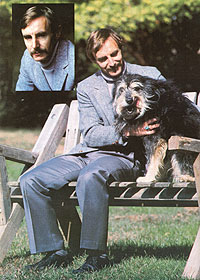
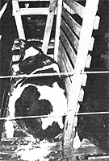

It's been said that a man or woman can achieve almost instant unpopularity by simply taking a public moral stand on any issue. Now this truth may seem to reflect poorly on our society, but the public's tendency to distrust righteous crusaders is probably - by and large - a healthy one . . . since it's all too easy for a man or woman to use a moral position as a justification for infringing upon someone else's rights. However, although Dr. Michael Fox's cause is, indeed, based upon morality - and might, indeed, occasionally threaten our conceptions of ourselves and of how we relate to the other creatures that share this planet - we think you'll find his views worth exploring.
Dr. Fox, you see, is one of the foremost spokespersons of the "animal welfare" movement. Specifically, he is an active crusader against modern intensive livestock production practices . . . which, he believes, are not only cruel to the animals that feed us but also dehumanizing to the men and women who become caught in the economic traps created by "factory farming".
Director of the Institute for the Study of Animal Problems (the scientific arm of the Humane Society of the United States) . . . veterinarian . . . ethologist . . . and author of scores of books and articles on animal behavior and care (including the popular Understanding Your Dog and Understanding Your Cat . . . as well as the widely syndicated "Animal Doctor" newspaper column), Dr. Fox is not a man whose views can be dismissed lightly. And since farm animal welfare - as was recently noted in a major agribusiness publication - will be "the issue of the 1980's . . . and it isn't going to go away", we decided to give you, our readers, a chance to meet one of the movement's most active representatives . . . to help you form your own opinions on this controversial subject.
So MOTHER paid a visit to Dr. Fox's Washington, D.C. office, and the resulting conversation appears - in edited form - here. We think it makes for interesting reading . . . and though there will probably be few of you who find yourselves agreeing with everything that the man stands for, we think that fewer still will not be moved by at least some of what he has to say.
PLOWBOY: Dr. Fox, your efforts on behalf of farm and laboratory animals have earned you the enmity of agribusiness firms, biomedical researchers, the Parity Foundation, and the USDA. As we've talked, though, I've noticed that you don't seem much shaken by all the pressure that's being brought to bear on you, and I can only assume that you're able to keep your composure because your feelings on the question of animal rights are deeply rooted.
FOX: Very much so. In fact, you might say that many of my closest childhood companions and confidants were animals. Even during the periods when my family was without a resident pet, I found that I was able to easily establish friendly relationships with the neighborhood's stray dogs. I think my ambition has always been to be a healer and rescuer, too . . . and I know that my parents strongly encouraged me to work toward achieving that goal.
Strangely enough, I believe that I also owe a lot to a small pond that was one of my first playgrounds . . . because by studying that body of water - by watching it change, through the seasons and through the life cycles of its residents - I formed a crude concept of ecology, and began to glimpse the fact that all things are somehow marvelously interconnected.
PLOWBOY: Still, you certainly didn't leap right into an adulthood devoted to the cause of animal rights.
FOX: No, I first took a vet's degree from the Royal Veterinary College of London . . . that was in 1961. As much as I wanted to care for other creatures, though, that training left me unsatisfied. I felt I hadn't learned enough about animal psychology and emotions. In order to fill that gap, I continued my education and eventually earned a Ph.D. - this time from the University of London - in 1967. That degree led me to a ten-year stint as a professor of psychology at Washington University in St. Louis.
PLOWBOY: And was it during that period that you began to pursue your interest in wild canine species?
FOX: Yes, and my research into the behavior of wolves and other feral canids helped bring focus to my long-held interest in conservation . . . and led me to the realization that I was actively studying animals but - despite my childhood goals - still wasn't actually doing a thing to help them. In the latter part of the 1960's, then, I began trying to use my training, by writing magazine articles and such, to help people come to a better comprehension of animal behavior and psychology . . . an understanding which, I was convinced, would increase my readers' concern for the welfare of other creatures.
However, my direct involvement in the struggle for animal rights dates back only to the early 1970's, when I was forced to face the fact that the wolves I'd been studying - animals that were really quite scarce already - were being shot, trapped, and poisoned as part of a benighted "predator control program" . . . often by people who seemed to lack any respect for (or understanding of) the animals they destroyed . . . or, in some cases, even for life itself.
PLOWBOY: Wasn't that about the time that L. David Mech's classic study of lupine behavior, Wolf, was published?
FOX: Yes, and - by making people much more aware of the fact that wolves were facing extinction - that volume certainly helped create a social climate that was increasingly open to all animal welfare issues.
Of course, I was still concerned with the well-being of pets as well as of wild creatures . . . and that portion of my work resulted in two books: Understanding Your Dog, published in 1971, and Understanding Your Cat, which appeared in 1974. Both of the volumes, which are now available from Bantam Press, attempt to improve the treatment of animals . . . by helping people who are responsible for pets better comprehend animal behavior.
PLOWBOY: At that time, were you still pretty much an academician? That is, I assume you hadn't yet become actively involved in the causes that concerned you.
FOX: Correct. In fact, I continued my research and earned a doctorate in ethology - or animal behavior - from the University of London in 1976. It was at that point, though, that I became a little uneasy about just sitting back and enjoying my tenured position and my security. I felt that I simply wasn't doing enough about a problem that I believed - and still believe - was deeply dangerous . . . not only to the animals that were being mistreated in many areas of our society, but also to society itself! At any rate, I began to look for a position that would allow me to make a real difference, and by chance and coincidence I was offered my present job as director of the Institute for the Study of Animal Problems . . . which is the scientific branch of the Humane Society of the United States.
PLOWBOY: That was also in 1976?
FOX: It was, and I immediately began to investigate the care and husbandry of laboratory animals . . . creatures used in scientific experiments. Of course, it wasn't long before I'd earned a reputation as a crazy idealist. At the time, you see, no one else in the scientific community was suggesting that lab creatures - I was mostly concerned with dogs and primates - have emotional needs, and that by ignoring such needs, many researchers were botching their experiments. That is, regardless of whether the work in question was justified, its results were often influenced by animal emotional factors that were never even recognized, much less accounted for, in the evaluation of the research.
For example, long-term isolation of a beagle or a rhesus monkey can cause serious behavioral, emotional, and psychological changes, including stereotyped pacing, depression, anorexia, or excessive eating, drinking, or grooming . . . the last of which can actually lead to self-mutilation. I've seen cancer research and pollution studies in which such beagles and monkeys were used, and the behavior changes and stresses involved were not even considered by the researchers, although it's widely believed that such factors do influence the results of experiments by increasing the animal's susceptibility to spontaneous or induced diseases, chemical toxicity, and the formation of malignant tumors.
PLOWBOY: Today, many cancer researchers feel that stress might be one of the most significant among the many factors that can contribute to the development of malignancies.
FOX: Yes, there has been a considerable turnaround in that area in the past few years. And, as a result of Congressional hearings held in October 1981, the scientific community is even beginning to accept the fact that animals have emotional needs.
However, there's another side to the research question, too. Some people feel that no experiments should be done on animals. Now in my opinion that's a somewhat unrealistic stand . . . simply because there are cases in which such tests provide the only way of evaluating a new vaccine or drug that could save many lives, both animal and human. It can also be argued, though, that Western medicine in general, and biomedical research in particular, must begin to focus more on the rigorous study of health and disease prevention . . . rather than concentrating on after-the-fact therapy and the treatment of symptoms, and using animals to evaluate the results.
PLOWBOY: Isn't the question of disease-preventive care at the heart of your concern for animals on "factory farms", too?
FOX: It's certainly one facet of the problem. You see, these gigantic livestock operations - which produce most of the world's neat - often depend upon highly intensive animal confinement for their "efficiency". And the systems are actually pathogenic . . . that is, they encourage the development and spread of disease. In such farming, the animal - be it a veal calf, a chicken, a steer, a pig, or whatever - has its telos interrupted. Telos is a term denoting the intermeshing of the creature's intrinsic nature and its environment . . . and the stability of that complex interrelationship is a significant contributor to health.
The problem is somewhat analogous to the difficulty brought about by agricultural monocropping. In that case, the ecos - which thrives on diversity - is disrupted by huge plantings of a single crop, and a situation is created in which the corn and soybean breeders, for example, are hard put to come up with enough new resistant varieties to stay merely one season ahead of the rapidly adapting crop diseases.
And, at least partly as a result of the disruption of the telos, modern livestock farming is also becoming increasingly dependent upon environmental controls and costly drugs. In fact, millions are now spent on medications to treat or halt the spread of diseases that are largely brought about by the way the animals are being raised.
This state of affairs certainly helps the petrochemical and drug companies bring in big annual profits, but it doesn't actually much benefit the farmers or the consumers.
PLOWBOY: Are you saying that such corporations are intentionally promoting unsound husbandry in order to create a need for their medications?
FOX: Not at all . . . there's no conspiracy involved. In fact, I'm convinced that the people concerned actually believe that factory farming is the most efficient way to produce meat. And of course, they're all walking the corporate treadmill of having to bring in ever larger annual profits.
Unfortunately, American business in general seems to concentrate upon short-term goals and immediate returns on investments rather than on planning for future productivity and stability. And now that much of our farming - both vegetable and livestock - is run by factory rules, there's little planning for the future there, either. Why, the economic pressure on farmers today is such that most can't even afford to practice crop rotation. And without that sort of care, we're not farming. . . we're mining the topsoil!
Modern agriculture is based upon the economy of scale, you see. And in the factory farms the goal isn't maximum productivity per animal . . instead, everything turns on cold profitability, tax angles, and such. Now there are those who claim that the overall productivity of such enterprises - that is, the yield per cage or per square foot of space, as opposed to that per animal - is proof enough that the livestock aren't suffering. After all, the argument goes, unhappy or unhealthy creatures wouldn't be productive.
The truth is, though, that the argument doesn't hold water. In fact, in many cases the need to maximize profits will work directly against an animal's welfare. We've found, for instance, that aggression among chickens - which, of course, is an enemy of productivity - decreases when they're crowded into battery or gang cages beyond a certain density (whereas it would show up strongly if the crowding weren't so severe). What happens is that the birds are simply overwhelmed with tension to the point that they become paralyzed. Under these circumstances, bird losses through aggression do drop . . . but this sort of stress-induced helplessness is a horrible form of suffering, and one of the most serious of animal welfare concerns.
As another instance, many pork producers are now killing off their sows after the first litter - even though the animals would become more productive with future birthings - simply because the sows are worth most to the factory farm when considered as a capital loss for tax purposes!
And despite such practices, the average U.S. farmer isn't getting rich . . . although - as I mentioned already - many of the agribusiness support industries are doing quite well. No, the owner of a typical family-sized dairy farm earns about as much in a year as does an individual working at a supermarket checkout counter . . . but you know the farmer is putting in longer, harder hours.
And ironically enough, although the middlemen and the support industries are, in effect, shortchanging the farmer, the agribusiness journals are able to use the farmers' hard times against the animal welfare movement! We're typically characterized - in such publications - as a bunch of crazed vegetarians who are out to destroy the American farm.
Well, the American farm is being destroyed . . . but it's being brought down by the loss of five billion tons of topsoil a year . . . by the pollution of our air . . . by eutrophication - excessive enrichment, and loss of oxygen - in our streams and rivers . . . by the use of agricultural chemicals that are possible carcinogens and immunosuppressants . . . by the feeding of poisons (including arsenic) to livestock as appetite stimulants . . . but not by farm animal welfare workers. We don't want everyone to stop eating meat . . . we simply want that meat to be raised in the most humane way possible, a practice that would likely improve the quality of the end product, as well.
PLOWBOY: Is there any hard evidence to indicate that the meat, eggs, milk, and such produced by factory farms can be unhealthful to the consumer?
FOX: Some, but not enough yet, I'm afraid. But the few bits of information that we do have are quite horrifying. As I mentioned before, livestock animals are - because of the pathogenic environment typical of factory farms - regularly dosed with antibiotics. Well, we now have documented cases of human bacterial diseases, in farmworkers, that have developed resistant strains as a result of the people's constant contact with those medicines!
PLOWBOY: It sort of makes you wonder what the effects of eating that meat might be!
FOX: Yes, and it's just too soon to tell. Why, California is only now experiencing an outbreak of bladder cancer that's related to a particular agricultural chemical that was once used to control nematodes and now contaminates drinking water. The pesticide was banned many years ago, but the cancer problem has only just shown up. These things are often very difficult to tease out. In many cases we're dealing with multiple contaminants that are going to be around for a good long time.
PLOWBOY: When one considers that many nutritionists believe we can't even predict what the long-term health effects of the modern American diet might be, it certainly is frightening to see agribusiness continuing to throw more variables into the situation.
FOX: Along that line, I recently heard about some research being done in England that's aimed at countering the effects of somatostasin in the body. Somatostasin, as you may or may not know, is the substance that inhibits growth hormones . . . it's what makes a given creature stop growing once it reaches a certain size. I've seen photographs of sheep treated with this "anti-somatostasin chemical block" that are twice as big as normal animals . . . and the scientists are hoping to get the same results with pigs and cattle.
Earlier researchers tried to accomplish much the same goal by using electrodes to destroy parts of a steer's brain, for example, in order to make the animal eat continuously. That practice proved to be too costly, but this new technique might just come into widespread use.
PLOWBOY: There's definitely some nightmare potential in that!
FOX: Well, genetically, our factory farms are already doing much the same thing to broiler chickens.
PLOWBOY: To fowls whose meat is being sold on the market?
FOX: Oh yes. They are, in a sense, rather monstrous birds, too. A laying hen will - like most creatures - eat until she satisfies her metabolic and production needs, and then stop. The broiler strain, though, will always eat to capacity. That's why the birds have so much fat in their bodies when they're slaughtered . . . and it's one of the reasons that the heart-failure phenomenon known as keel-over or flip-over has become such a problem in factory broiler farms. The birds' hearts often simply can't keep up with the tremendous metabolic activity in their bodies . . . the constant laying on of meat.
And although we don't know how humans might be affected by incorporating such flesh into their diets over the years, we do already know what some of the effects are on the chickens themselves. We've seen, for instance, a 5% to 10% decrease in fertility among broiler breeder stock.
PLOWBOY: To borrow Barbara Ward's "spaceship earth" analogy, it seems that after all these thousands of years, humankind is finally able to reach the console of this ship we're traveling on . . . and we're merrily pushing every button in sight, although we don't yet know what any of them will do!
FOX: And yet there are many people in power who seem to oppose any call for caution. Take a look at this article in Parity magazine, for instance. After attacking me in the nicest way - saying that my degrees are phony and all kinds of libelous stuff - the piece concludes (in an attempt, I suppose, to warn readers that even "absurd" beliefs can become accepted) with this line: " . . . is the notion of animal rights any more preposterous than the idea that DDT kills?"
Worse yet, as benighted as that attitude would seem to many folks, it's pretty much in keeping with some of the actions being taken by our current administration. Were you aware, for example, that the State Department is taking steps to remove all restrictions on the exportation - to Third World countries - of human drugs and agrichemicals that are banned in this nation? The firms would have to provide only a minimum of information about the potential hazards of the substances, too . . . and they claim that the loosening of regulations is essential if they're to compete with foreign manufacturers.
PLOWBOY: But those dangerous agricultural chemicals aren't going to be used to grow black beans, say, for the population of the country that buys the poisons. They're going to be used to grow the high-profit export crops that will wind up, drenched with residues of substances that are illegal to use here, on our supermarket shelves . . . where they'll often compete with goods grown, without those chemicals, by U.S. farmers!
FOX: Yes, and the fact is that the needs of the American farmers are consistently ignored by those groups that are supposed to represent them. After all, the American Farm Bureau and the USDA are essentially branches of - or fronts for - agribusiness interests. Now I suppose it would be perfectly acceptable, and even right, for the USDA to provide representation for agribusiness interests, but the agency should also represent the small independent farmer. Unfortunately, the powers that be in this administration seem to feel that the family farm - the "mom and pop" operation - is a kind of anachronism that ought to be eliminated.
PLOWBOY: I think their usual inference is that small farms aren't "real" . . . that they represent a sort of self-indulgent isolationism rather than "serious" productive agriculture.
FOX: And that's a terrible shame because, to put the case in simple terms, the free enterprise system - as it applies to farming - is being eliminated by corporate monopolies. Labor- and community-destroying, fossil-fuel-dependent, and energy-capital-intensive factory farming is taking over. In many cases, the independent farmer either has to become an employee of the corporation or is forced to sell out . . . simply because he or she doesn't have the cash to compete with the big operations.
And when the land and livestock don't really "belong" to the farmer anymore-because he or she is functioning as a manager for a company of investors-a counterproductive element is introduced. The "new" system works against the traditional sense of pride, of personal investment, that's present when a man or woman tends the land with the dream of passing it on to his or her children, and also works against the farmer's feeling of empathy for the animals involved.
The best example of this counterproductive influence can be seen in the U.S.S.R., where the per-acre yield was three- to fivefold greater on the peasants' privately owned allotments than it is now on state-run cooperative farms. American "corporate socialism" may be creating a similar problem here.
PLOWBOY: Didn't a wise Chinese poet once say, "The finest fertilizer is the footprints of the gardener"?
FOX: I don't know the quote, but it certainly sounds Oriental. The Chinese Taoist philosophy is largely based upon ecology.
PLOWBOY: Can you describe some of the specific practices, resulting from the impersonal and profit-oriented nature of factory farming, that animal welfare people are concerned about?
FOX: Well, most of the problems have been created - at least in part - by [1] the belief that bigness, in terms of scale of operation, etc., is best . . . [2] the emphasis on operator convenience in the design of livestock management systems, at the expense of the animals' basic requirements . . . and [3] the need to confine livestock in pens or crates in order to easily monitor the animals' performance. The most pressing problems resulting from this combination of factors are overstocking (for example, keeping five adult laying hens in a tiny 12" X 18" cage) and the related concerns of extreme restriction of movement and environmental impoverishment.
Under the "confinement" method, for example, veal calves spend their entire lives - often in the dark - in wooden stalls that measure only 2 feet wide by 4-1/2 feet long . . . too small even for the animals to turn around in. And in order to make sure that the meat is of the now popular "light" color, the animals are fed nutritionally deficient diets, and often suffer anemia from shortly after birth until they're slaughtered. Now, some veal operations have begun to provide a little light and use slightly larger crates, but such changes are too minor to significantly affect the welfare problem.
Furthermore, inhumane conditions - which will vary from one type of animal to another and, of course, from one livestock-raising operation to another - are compounded by the antibiotic-laden diet that I mentioned before, which is necessary to control illness in disease-encouraging environments . . . and by conditions that don't allow the animals to engage in the social activities (such as grooming, stretching, preening, or even lying down) that are necessary to their well-being.
PLOWBOY: Are you, in effect, making some strong accusations against the American farmer?
FOX: Absolutely not. I want to stress that I have no intention of even implying that the men and women involved in intensive livestock raising are cruel. Instead, such individuals are themselves caught in a very cruel economic bind. They've been coerced and propagandized - by the agribusiness industries and their "front" organizations and publications - to adopt systems that, because of the huge investments required, can't be abandoned once they're committed to. And these same systems often force the farmers to ignore the very husbandry practices - relating both to livestock and to the land itself - that can make farming among the most noble of occupations.
PLOWBOY: You refer to the costliness of factory farming. Would you care to go into a little more detail on that subject?
FOX: Certainly. First of all, in terms of expense to the farmer, the buildings required for intensive livestock production are of the most costly kind. And as I've already noted, the immense initial expense of setting up on a factory-farm basis generally forces the farmer into a commitment to use whatever methods are necessary to sustain that system. After all, it's likely that he or she has had to go so far into debt to set up the "factory" that an attempt to break away from the intensive farming methods would mean bankruptcy.
Furthermore, as another example of the treadmill created by the factory-farm system, the pathogenic conditions generated by crowding and such require, as I've explained, the constant administering of antibiotics to the animals. The average annual cost of these drugs - of those sold in the form of feed additives alone - now runs to about $125 million.
One also has to consider the cost to society represented by the meat, and animal lives, wasted as a result of improper treatment and - especially - inhumane transport. John Macfarlane, a professional livestock consultant, estimates that if all the livestock that die in transit in an average year, plus the parts of animals that have to be discarded after butchering as a result of bruising and crippling, were loaded into railroad cars - with each car containing 38,000 pounds of meat - there'd be enough of such wasted protein to fill a stock train 40 miles long!
PLOWBOY: I assume that, since you're devoting all of your efforts to welfare-related problems, you must believe there's a way out of this whole fix that could benefit farmers, consumers, and livestock.
FOX: Well, first of all, I think there will eventually have to be some sort of alliance formed between concerned animal raisers and conscientious consumers. Of course, in order for that to happen, we'll have to overcome the combined public-relations/propaganda power of the agricultural and biomedical industries. Through their house publications, and with the help of the government agencies that speak the "party line", these groups are - as I mentioned before - making concerted efforts to polarize the animal welfare issue, to convince farmers that animal welfare advocates are out to destroy American agriculture, to put them out of business.
I must admit, though, that the polarization has also been helped along at times by the more radical "animal liberation" groups . . . which are pretty much the fringe elements of the animal rights movement, and are against raising livestock at all. In my view, such individuals simply aren't being reasonable. Farm animals can be components in a sound food-production ecosystem. Furthermore, the liberation groups fail to consider that 85% of the world's draft power for agriculture comes from "beasts of burden". "Liberating" those animals would result in mass starvation . . . and tractors are neither economically nor ecologically viable as alternatives.
At any rate, the polarization is primarily a product of agribusiness propaganda . . . which, of course, has been able to use radical statements made by animal "libbers" to great effect in scaring farmers. And this polarization stands in the way of the creation, through simple publicity, of a market for humanely raised meat and such that would parallel the now rapidly expanding demand for "organic" or "natural" foods. This market is already developing in Europe, where "animal welfare veal" and eggs from hens not raised in battery cages are specifically sought by many consumers. Why, there's a significant - but virtually unexplored - market for lean range- or forage-fed beef in the U.S. right now . . . based in part upon the growing concern about the effect on human health of consuming animal fat.
Really, if we can simply inform the public of the situation, and let them know that more humanely raised - and likely much more healthful - meat is being produced, they'll be able to support the livestock growers who are employing wholistic and humane practices . . . and thus prove that there's an economically viable alternative to the factory farms.
PLOWBOY: That's a big order, and it'll be especially hard to fill when working against the sort of opposition you face. Can you give us some examples of the arguments the agribusiness establishment will likely continue to use to deny the need for animal welfare reform?
FOX: Yes, I can. Aside from the simple ploy of picturing all of us as idealistic fools who anthropomorphize - that is, attribute human traits to - creatures that we don't really understand, the attacks can range from the sublime to the ridiculous.
We have, for instance, actually been called heretics by a representative of the American Farm Bureau. The man based his charge on the notion that we're defying the Judeo-Christian tradition - as set forth in the Bible - by denying that man has "dominion" over animals . . . a word that he chooses to believe implies a God-given right to exploit our fellow creatures in any way we like.
Probably more serious - and at least a bit more difficult to answer - is the claim that today's intensive agricultural systems are necessary to feed a hungry world. Well, even if we discount the fact, pointed out in the study on organic farming commissioned by former Secretary of Agriculture Bob Bergland, that wholistic agricultural methods can compete with factory farms in terms of productivity and such, the truth of the matter is that North American agriculture is not doing all that much to provide food to the truly hungry peoples of the world.
For example, 85% of all the grain exported by the U.S. is used as animal feed . . . and it's only the well-to-do in the receiving nations who are able to afford to buy the meat raised on that American grain. Furthermore, we import some of that meat ourselves . . . and not only is it, as you mentioned before, perhaps contaminated with the banned agricultural chemicals that we're selling overseas, but it's also - especially in the case of meat produced in some South American countries - being raised on land that was once available to the poor of those nations for growing their subsistence crops! As you can see, then, the claim that U.S. agriculture must continue to intensify in order to provide food for the starving peoples of the earth really can't be defended.
But the most insidious argument used against us, and one that's still believed by a great number of intelligent and well-meaning people, is that animals don't really suffer when kept under the sort of conditions that we've been talking about. Neil Black, for instance - one of the spokespersons for the Livestock Conservation Institute - has tried to repudiate our efforts by claiming that animals don't have the same requirements as people, and that it's anthropomorphic to claim that they do. Well, these creatures do share many requirements with humans . . . including the need for food, water, fresh air, social interaction, and the opportunity to get away from each other occasionally. By claiming that this isn't the case, Mr. Black is saying - in effect - that most of the recent comparative biomedical research on animals is invalid.
PLOWBOY: Can you present some scientific evidence to prove that animals do experience many of the same physical reactions and feelings that we do?
FOX: Well, obviously, we can't really know how much pain, pleasure, fear, anxiety, or whatever an animal is experiencing . . . we can only draw analogies.
PLOWBOY: Of course . . . in fact, no one can really tell what another person is feeling at a given time.
FOX: Exactly. We can only take each other's word for it. And since I'm a very squeamish person, for instance, it's possible that an activity that you'd enjoy might cause me great emotional pain. However, we can draw analogies - either human to human or human to animal - by observing changes in behavior and in physiology. Through such observations we can see - for instance - that both humans and animals will, if they're confined in a small chamber, soon resort to repetitive movements. And if the confinement goes on long enough, we can see that the "prisoner" - be it human or animal - will begin to lose body calcium.
More extreme stress - such as that caused by severe crowding - will lead, in many animals,, to such physical reactions as an increase in the size of the adrenal glands, changes in the rate of production of growth hormones, and so forth.
We can see, too, that other creatures - even birds - have in their brains a crude emotional center that's equivalent to the human limbic system . . . which means that those creatures are physically equipped to experience fear. And we can probably go on to assume that birds and mammals, at least, sometimes face greater fears than those that humankind usually experiences . . . because we are at least able to reason.
If a child is put under restraint for a medical problem, say, one can explain the need for the restriction of movement and thus eliminate at least a little of the youngster's fright. When a steer is put in a holding shoot, though, it'll often struggle to the point of collapse . . . when exhaustion overpowers its fear.
Furthermore, we now know that monkeys, dogs, rats, and even bony fish have benzodiazepin receptors - which enable an organism to feel anxiety - in their brains. (Humans use calmative drugs, such as Valium, to block these receptors and thus limit the ability to experience anxiety.) The presence of such receptors is, of course, convincing evidence that even animals as primitive as fish can feel fear and anxiety.
PLOWBOY: But what would cause reasonable people - in the face of both scientific evidence and the many clues that are revealed to anyone who spends any amount of time around animals - to believe that other creatures can't feel pain or experience emotional distress?
FOX: Well, I'd guess that we have this widespread denial of empathy because it simply hurts too much - it's too painful - for many of us to get in touch with our own helplessness through appreciating the helplessness and suffering of animals. It's a sort of defense mechanism, you see. When we begin to empathize too fully with other creatures, we're confronted with an awesome burden of responsibility and guilt . . . especially if our lifestyles have caused us to inflict unnecessary suffering or extreme deprivation upon animals.
This syndrome is very apparent among laboratory researchers. They treat their "subjects" like machines, simply because it's not pleasant to get to know a creature before vivisecting it. A former graduate student of mine was once asked by a colleague - an individual who was conducting brain research on cats - to take a look at one of the animals used in the experiments. It seems the researcher feared, because of a noise the feline was making, that the cat was developing an upper respiratory infection. So, my friend went to look at the animal, gave it a thorough examination, and suddenly realized what the problem was.
"There's nothing wrong with this cat," he explained, "it's just purring."
PLOWBOY: I see what you mean when you say that many researchers treat their experimental animals as tools. Isn't there any progress being made in discouraging that sort of callousness?
FOX: Yes, there is. For example, we've gathered some solid statistics showing that many of the traditional methods of raising pigs are more productive than the total-confinement, environmentally controlled farms. We've also learned, from research done in England, that veal calves can be just as productive - in terms of meat gain - and healthier if they're raised in groups rather than in separate pens.
Then again, we know - and are able to prove - that sometimes a lot of good can be done by modifying, rather than abandoning, the new methods . . . and, of course, such small, inexpensive steps are more likely to be taken by farmers. In the case of dairy cattle, for instance, great welfare improvements can be brought about by simply making sure the animals have occasional access to a grass paddock or meadow. Just letting them get off the concrete once in a while will, you see, go a long way toward cutting down the incidence of lameness . . . which is one of the most common reasons why dairy cattle have to be destroyed!
Furthermore, we can now show egg producers how they can continue to use battery cages - which admittedly do keep the birds off the ground and thus protect them from a number of parasitic diseases - by just reducing the stocking density and making a modification to the enclosure.
PLOWBOY: What sort of change would you recommend?
FOX: The battery cage simply needs an "escape" chamber to allow the birds to move away from their aggressive neighbors . . . and possibly a perch and nest box.
PLOWBOY: So you do have evidence indicating that many of the steps needed to bring about significant change aren't all that complex. I know, however, that - even though the smallest improvement in animal welfare must cheer you - as a concerned environmentalist you have a larger vision of the future. Would you care to conclude this interview by discussing your feelings about humankind's chances of bringing about - in time - the kinds of changes that we'll have to make to face the dangers to come?
FOX: Well, any such discussion must be built on the understanding that we still live like kings and queens in North America.
PLOWBOY: But will we be able to reduce our demands upon the environment and allow the planet to reach a steady state?
FOX: Other than in terms of energy use - as it relates to our daily "income" of solar power - I don't really think there is any such thing as a steady state. Everything changes - that's one of the major ecological laws - and we must learn to live with the flow of that change. Furthermore, if we can avoid nuclear war or some other such ecocatastrophe, I feel that our very ability to adapt as needed will eventually serve to promote acceptance of, and advances in, the wholistic sciences.
We're already discovering some beautiful pieces of evidence to support such fields of study. For example, it's been revealed that estrogens, which build up while plants dry, actually bring a halt to breeding activity in mice that consume the autumn-withered vegetation . . . and do so at a time when the coming cold weather would kill any young that were produced. There's also new evidence that certain mosses in the Arctic contain a biological form of antifreeze . . . and - wonderfully - that reindeer eat such plants and that the cells in the animals' bodies actually use that substance to protect themselves against the bitter cold!
In terms of humankind, we have only to look at the Australian aborigines who go into hypothermia at night so their bodies can conserve energy, or at the bushmen whose incredibly wrinkled skin allows them to literally swell up and store water or food when it's abundant, to know that we have all the biological and genetic tools necessary to adapt to the regular rhythmic changes of nature.
The risk, of course, is that we'll foolishly do something that will break that rhythm. To avoid doing so, we must learn to apply science and technology in a much more enlightened manner than we do today.
And I believe that one of the first necessary steps in that direction will be to move our food production systems from a profit-oriented market economy to one based upon the rewards of good stewardship.
To do so, we'll need to call upon humility, empathy, and compassion. We have to allow ourselves to learn from nature and to live co-creatively. . . in harmony with - and with a deep respect for - all of life.
We are in grave danger of bringing an industrial-agricultural nemesis upon ourselves . . . and the ecological damage sustained by our farmland, coupled with the economic plight of independent farmers, is heralding its coming. There's no way to remedy the situation with a quick technological fix, either. Unless we can bring about a real change in consciousness, we will, as U Thant warned - paraphrasing the poet T.S. Eliot - "go out in either a bang or a whimper".
Most people fear the nuclear bang today, but the whimper poses an even greater danger . . . the exhaustion and pollution of our resources. The restoration of U.S. agriculture, on an ecologically sound basis, must be this nation's highest priority . . . because the monopolistic multinational agribusiness corporations that value only control and profit may well be our nemesis.
We're very fortunate, you know. A society that can afford to maintain four billion farm animals a year, and to use 80 to 100 million laboratory animals annually, is almost unbelievably affluent. We must remember, though, that - as Mahatma Gandhi observed - one can determine how civilized a country is by the way in which its people treat their animals. And in those terms, despite (or perhaps because of) all our wealth . . . the goal of true civilization still seems to be a long way off:
|
 |
 |
|